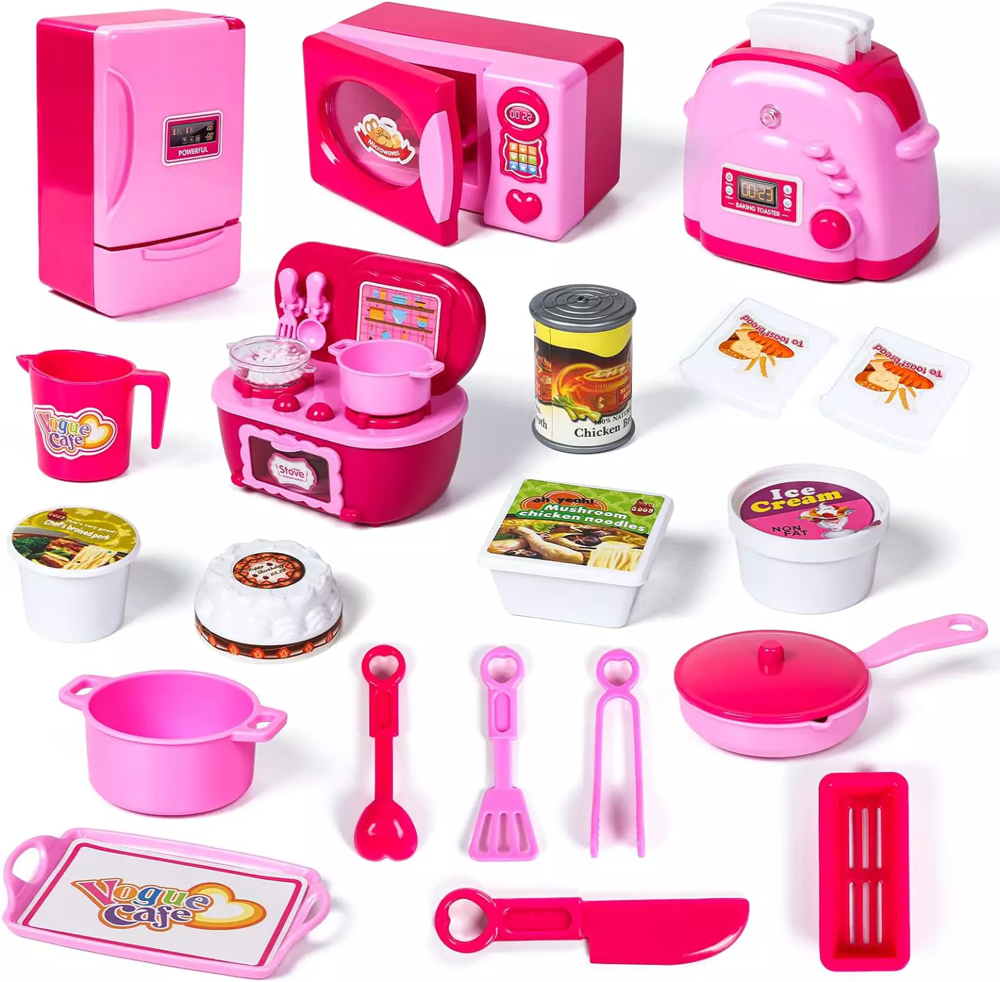

A "kitchen package game" can refer to various types of games that involve kitchen-related activities, often designed for entertainment and education. Here are a few detailed descriptions for different types of kitchen package games:
- Cooking Simulation Video Games:
- Cooking simulation games are video games where players take on the role of a chef or cook, preparing and serving dishes. These games often involve following recipes, managing time, and serving customers in a virtual kitchen. Examples include "Cooking Mama," "Overcooked," and "Cooking Simulator." Players can experience the challenges of running a kitchen, from chopping ingredients to plating dishes.
- Board Games with a Kitchen Theme:
- Board games that involve kitchen activities or cooking themes. These games often include tasks like collecting ingredients, following recipes, and serving dishes to win points. Examples include:
- "What's Cookin'?": A game where players collect ingredient cards and follow recipe cards to create dishes and earn points.
- "Kitchen Rush": A cooperative game where players work together to manage a restaurant kitchen, preparing and serving meals within a time limit.
- Kitchen Role-Playing Games:
- Physical role-playing games where players pretend to be chefs or kitchen staff. These games can involve setting up a play kitchen with toy appliances and utensils, then "cooking" and serving play food. This type of game is popular with young children and can help develop creativity and social skills.
- Cooking Competitions:
- Cooking competitions can be organized as games, where participants or teams compete to create the best dish within a set time limit. This can be done in a real kitchen with actual cooking, or it can be a more imaginative game using toy kitchens and pretend food. Judging criteria can include taste, presentation, and creativity.
- Educational Kitchen Games:
- These games are designed to teach players about cooking, nutrition, and kitchen safety. They can be physical games or digital apps that guide players through various cooking tasks and provide educational content. Examples include:
- "Chef's Quiz": A trivia game with questions about recipes, cooking techniques, and nutrition.
- "Healthy Kitchen Challenge": A game where players create balanced meals using food cards that represent different food groups and nutrients.
- Interactive Kitchen Toys:
- Interactive kitchen toys often come as sets with various kitchen tools, appliances, and pretend food. These toys can include built-in games that guide children through cooking tasks, recipes, or timed challenges. An example is the "Little Tikes Cook 'n Learn Smart Kitchen," which has interactive features and app integration for various kitchen-themed games.